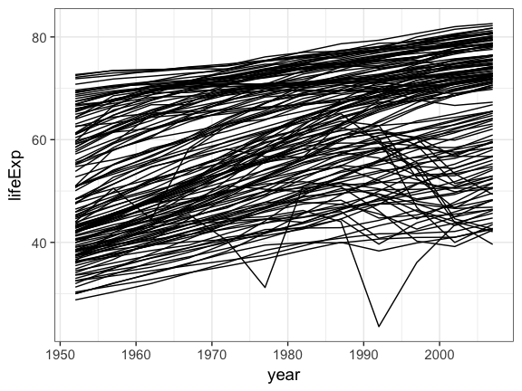
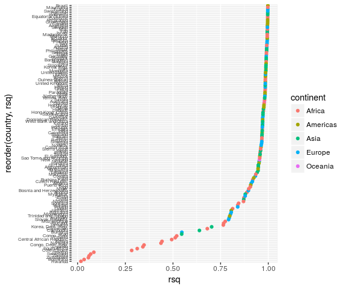
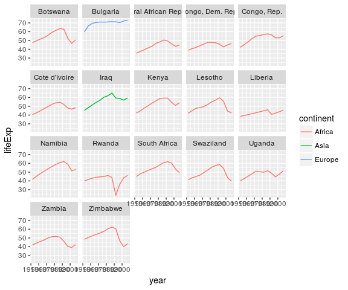
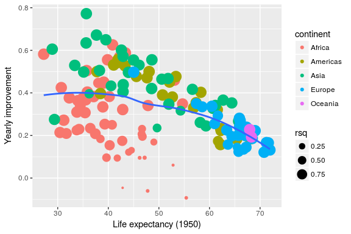
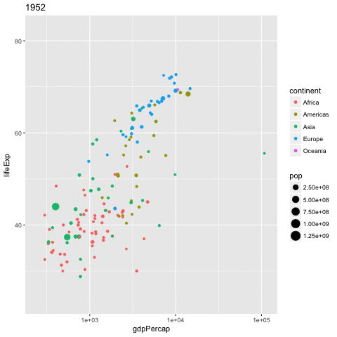

- use
dplyr/purrrfor efficient data manipulation - tidying linear models using
broom - managing workflow by keeping related things together in one
tibble.
4 May 2017
Learning objectives
Managing multiple models
Tutorial based on the great conference by Hadley Wickham

purrr::map / dplyr::do
progress bar will be added

Gapminder
global vs individual trend
library("gapminder")
gapminder %>%
ggplot(aes(x = year, y = lifeExp, group = country)) +
geom_line()

Keep related things together
nest
Nest per country
by_country <- gapminder %>% mutate(year1950 = year - 1950) %>% group_by(continent, country) %>% nest() by_country
# A tibble: 142 × 3
continent country data
<fctr> <fctr> <list>
1 Asia Afghanistan <tibble [12 × 5]>
2 Europe Albania <tibble [12 × 5]>
3 Africa Algeria <tibble [12 × 5]>
4 Africa Angola <tibble [12 × 5]>
5 Americas Argentina <tibble [12 × 5]>
6 Oceania Australia <tibble [12 × 5]>
7 Europe Austria <tibble [12 × 5]>
8 Asia Bahrain <tibble [12 × 5]>
9 Asia Bangladesh <tibble [12 × 5]>
10 Europe Belgium <tibble [12 × 5]>
# ... with 132 more rowsWhat happens in the DATA FRAME, stays in the data frame
vembedr::embed_youtube("4MfUCX_KpdE", query = list(start = vembedr::secs("15m43s"), end = vembedr::secs("16m01s"))) %>% htmltools::div(class = "vembedr")
Keep related things together
linear models
Linear model per country
by_country_lm <- by_country %>% mutate(model = map(data, ~ lm(lifeExp ~ year1950, data = .x))) by_country_lm
# A tibble: 142 × 4
continent country data model
<fctr> <fctr> <list> <list>
1 Asia Afghanistan <tibble [12 × 5]> <S3: lm>
2 Europe Albania <tibble [12 × 5]> <S3: lm>
3 Africa Algeria <tibble [12 × 5]> <S3: lm>
4 Africa Angola <tibble [12 × 5]> <S3: lm>
5 Americas Argentina <tibble [12 × 5]> <S3: lm>
6 Oceania Australia <tibble [12 × 5]> <S3: lm>
7 Europe Austria <tibble [12 × 5]> <S3: lm>
8 Asia Bahrain <tibble [12 × 5]> <S3: lm>
9 Asia Bangladesh <tibble [12 × 5]> <S3: lm>
10 Europe Belgium <tibble [12 × 5]> <S3: lm>
# ... with 132 more rowsbroom cleanup

Tidying model coefficients
extract from nested lists
useful info
- coefficients estimates:
- slope
- intercept
- \(r^2\)
- residuals
library("broom")
models <- by_country_lm %>%
mutate(glance = map(model, glance),
rsq = glance %>% map_dbl("r.squared"),
tidy = map(model, tidy),
augment = map(model, augment))
models
# A tibble: 142 × 8
continent country data model glance
<fctr> <fctr> <list> <list> <list>
1 Asia Afghanistan <tibble [12 × 5]> <S3: lm> <data.frame [1 × 11]>
2 Europe Albania <tibble [12 × 5]> <S3: lm> <data.frame [1 × 11]>
3 Africa Algeria <tibble [12 × 5]> <S3: lm> <data.frame [1 × 11]>
4 Africa Angola <tibble [12 × 5]> <S3: lm> <data.frame [1 × 11]>
5 Americas Argentina <tibble [12 × 5]> <S3: lm> <data.frame [1 × 11]>
6 Oceania Australia <tibble [12 × 5]> <S3: lm> <data.frame [1 × 11]>
7 Europe Austria <tibble [12 × 5]> <S3: lm> <data.frame [1 × 11]>
8 Asia Bahrain <tibble [12 × 5]> <S3: lm> <data.frame [1 × 11]>
9 Asia Bangladesh <tibble [12 × 5]> <S3: lm> <data.frame [1 × 11]>
10 Europe Belgium <tibble [12 × 5]> <S3: lm> <data.frame [1 × 11]>
# ... with 132 more rows, and 3 more variables: rsq <dbl>, tidy <list>,
# augment <list>Exploratory plots
Does linear models fit all countries?
models %>% ggplot(aes(x = rsq, y = reorder(country, rsq))) + geom_point(aes(colour = continent)) + theme(axis.text.y = element_text(size = 6))

Exploratory plots
focus on non-linear trends
models %>% filter(rsq < 0.55) %>% unnest(data) %>% ggplot(aes(x = year, y = lifeExp)) + geom_line(aes(colour = continent)) + facet_wrap(~ country)

All in all
models %>% unnest(tidy) %>% select(continent, country, rsq, term, estimate) %>% spread(term, estimate) %>% ggplot(aes(x = `(Intercept)`, y = year1950)) + geom_point(aes(colour = continent, size = rsq)) + geom_smooth(se = FALSE, method = "loess") + scale_size_area() + labs(x = "Life expectancy (1950)", y = "Yearly improvement")

animation made easy
gganimate by David Robinson
library(gganimate)
gapminder %>%
ggplot(aes(x = gdpPercap,
y = lifeExp,
size = pop,
color = continent,
frame = year)) +
geom_point() +
scale_x_log10() -> p
gganimate(p, 'img/09_gapminder.gif')